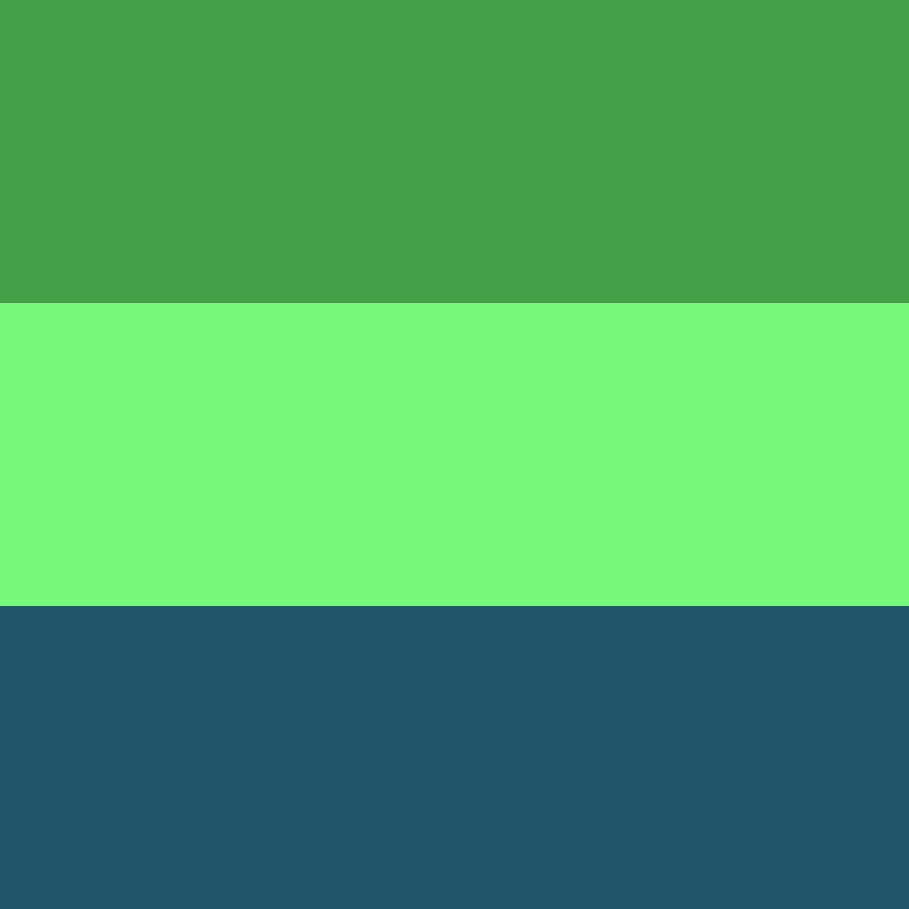

TODO remember to comment the video back in when complete. While writing, I just want some faster page loads.
I’ve come to despise the creation of stress when stress is not required.
I realize that this is context dependent. A real pursuit towards zero stress requires extraordinary levels of trust, shared vision and shared sense of quality.
I digress.
Trees don’t induce stress. They just are. Frankly, they remove stress. For me, at least.
So, I want that.
I’m fortunate enough to be able to meet great designers around my lunch table. And … Well, let me share what happened.
This whole site smells of incompleteness. The dark side of incompleteness is confusion. The bright side is that by living in incompleteness, we can improve. Which is why I’m writing content here. I use the same approach for my Linux system. Can I improve it? I’d rather have incomplete parts than inability to move forward.
A while ago, I slapped together some colors I felt had some sense of calm in them:

But all of these are quite intense. What I feel is lacking is texture. Shades. And perhaps some depth. Darkness.
So!
I’d like to create something. In here. Program it. Add texture. We’re straight into generative art territory, aren’t we. perhaps mix the three in a nice way? I dunno. Let’s see where we end up.
I’ve used https://github.com/mikera/imagez for image processing before, that was quite nice. Essentially, I just want to put pixels on a canvas. This could be kinda fun.